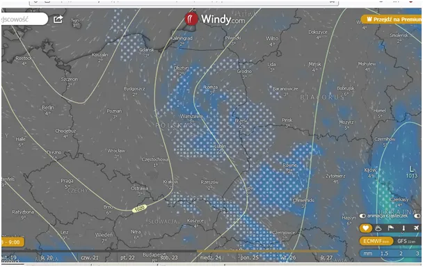
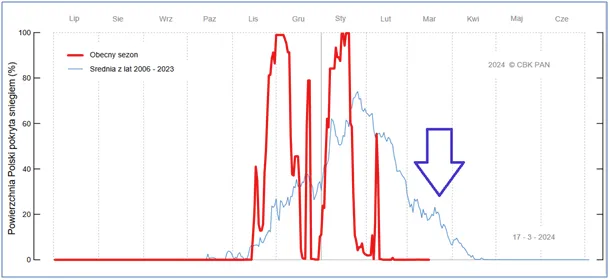

Mroczny kico-bałwanek
Na północy Polski w lasach grasuje "Mroczny kico-bałwanek". Potrafi niespodziewanie, z rowu nastraszyć kierowcę, potrącić tył pędzącego samochodu, wprowadzić pojazd w poślizg, a potem wywlec ofiary z rozbitego auta i objeść do kości.

Wraz z rozwojem dziennikarstwa na platformie AI będziemy coraz częściej czytali takie newsy, które skutecznie będą odwracały uwagę ludu od typowych opadów śniegu pod koniec marca w czasach "globalnego ocieplenia".

Przewidywałem te opady na podstawie wieloletnich obserwacji, które na wykresie zaśnieżenia Polski ujawniają regularny powrót zimy ok. 20 marca. Wskazuje to strzałka. Zima dotrze na południe Europy do Rumunii i dosypie tam w Karpatach.

Przez cały tydzień musimy się liczyć z nocnymi przymrozkami, na północy nawet w Niedzielę Palmową. Skoro już o palmach, nie używamy do wypieków margaryn, szczególnie palmowych, dobry olej rzepakowy będzie znacznie zdrowszy lub skoro to święta, masło.
Smacznego!
Paweł Klimczewski